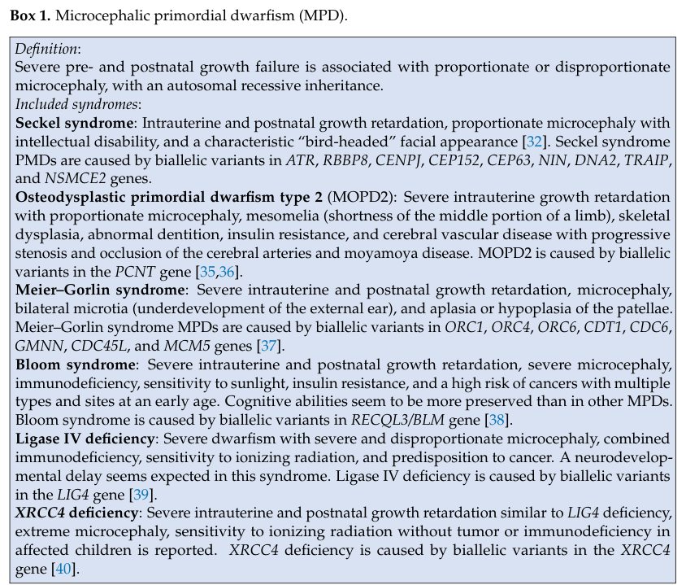

Autosomal recessive primary microcephaly (MCPH) is a genetically heterogeneous group of disorders defined by congenital microcephaly (occipitofrontal head circumference at least 3 standard deviations below the age- and sex-matched mean at birth, or at least 4 SD below by 6 months of age) with a small but architecturally near-normal brain showing a simplified gyral pattern. More than 25 MCPH loci (MCPH1-MCPH28+) have been mapped, and the encoded proteins converge on centrosome biology, mitotic spindle assembly, kinetochore function, DNA-damage response, and apical-basal polarity of neural progenitor cells. The shared pathomechanism is depletion of the founder pool of proliferating neural progenitors during fetal corticogenesis, leading to a reduced complement of cortical neurons and a proportionally small but otherwise organized cerebral cortex. Intellectual disability ranges from mild to severe depending on the gene and variant, while other neurologic, motor, and sometimes skeletal features may accompany the microcephaly. ASPM mutations (MCPH5) are the single most common cause worldwide, particularly in populations with high consanguinity.
Ask a research question about Autosomal Recessive Primary Microcephaly. OpenScientist will conduct autonomous deep research using the Disorder Mechanisms Knowledge Base and PubMed literature (typically 10-30 minutes).
Do not include personal health information in your question. Questions and results are cached in your browser's local storage.
name: Autosomal Recessive Primary Microcephaly
creation_date: "2026-05-13T12:00:00Z"
updated_date: "2026-05-13T20:00:00Z"
category: Mendelian
disease_term:
preferred_term: autosomal recessive primary microcephaly
term:
id: MONDO:0016660
label: autosomal recessive primary microcephaly
parents:
- Microcephaly
description: >-
Autosomal recessive primary microcephaly (MCPH) is a genetically heterogeneous
group of disorders defined by congenital microcephaly (occipitofrontal head
circumference at least 3 standard deviations below the age- and sex-matched
mean at birth, or at least 4 SD below by 6 months of age) with a small but
architecturally near-normal brain showing a simplified gyral pattern. More
than 25 MCPH loci (MCPH1-MCPH28+) have been mapped, and the encoded proteins
converge on centrosome biology, mitotic spindle assembly, kinetochore
function, DNA-damage response, and apical-basal polarity of neural progenitor
cells. The shared pathomechanism is depletion of the founder pool of
proliferating neural progenitors during fetal corticogenesis, leading to a
reduced complement of cortical neurons and a proportionally small but
otherwise organized cerebral cortex. Intellectual disability ranges from mild
to severe depending on the gene and variant, while other neurologic, motor,
and sometimes skeletal features may accompany the microcephaly. ASPM
mutations (MCPH5) are the single most common cause worldwide, particularly
in populations with high consanguinity.
has_subtypes:
- name: MCPH5
display_name: MCPH5 (ASPM)
description: >-
Caused by biallelic loss-of-function variants in ASPM (abnormal spindle
microtubule assembly). The single most common MCPH subtype globally,
accounting for the majority of cases in consanguineous populations.
ASPM localizes to the spindle pole and is required for symmetric
proliferative divisions of apical neural progenitors; loss promotes
premature switching to asymmetric neurogenic divisions and progenitor
depletion. OMIM: 608716.
subtype_term:
preferred_term: microcephaly 5, primary, autosomal recessive
term:
id: MONDO:0012106
label: microcephaly 5, primary, autosomal recessive
evidence:
- reference: PMID:12355089
reference_title: "ASPM is a major determinant of cerebral cortical size."
supports: SUPPORT
evidence_source: HUMAN_CLINICAL
snippet: "Here we show that the most common cause of MCPH is homozygous mutation of ASPM, the human ortholog of the Drosophila melanogaster abnormal spindle gene (asp), which is essential for normal mitotic spindle function in embryonic neuroblasts."
explanation: Establishes ASPM (MCPH5) as the most common cause of MCPH and its mitotic-spindle function.
- name: MCPH1
display_name: MCPH1 (Microcephalin)
description: >-
Caused by biallelic variants in MCPH1 (microcephalin). MCPH1 encodes a
BRCT-domain protein involved in the DNA-damage response, premature
chromosome condensation, and centrosome regulation. A characteristic
cytogenetic feature is prophase-like cells with prematurely condensed
chromosomes on routine karyotype. OMIM: 251200.
subtype_term:
preferred_term: microcephaly 1, primary, autosomal recessive
term:
id: MONDO:0009617
label: microcephaly 1, primary, autosomal recessive
evidence:
- reference: PMID:15806441
reference_title: "Autosomal recessive primary microcephaly (MCPH): a review of clinical, molecular, and evolutionary findings."
supports: SUPPORT
evidence_source: HUMAN_CLINICAL
snippet: "MCPH1, encoding Microcephalin"
explanation: Identifies MCPH1/Microcephalin as the first cloned MCPH gene.
- name: MCPH2
display_name: MCPH2 (WDR62)
description: >-
Caused by biallelic variants in WDR62. WDR62 is a centrosomal/spindle-pole
protein required for accurate mitotic spindle orientation in neural
progenitors. MCPH2 is among the more frequently observed MCPH subtypes
and may include additional cortical malformations such as pachygyria,
polymicrogyria, and corpus callosum hypoplasia. OMIM: 604317.
subtype_term:
preferred_term: microcephaly 2, primary, autosomal recessive, with or without cortical malformations
term:
id: MONDO:0011435
label: microcephaly 2, primary, autosomal recessive, with or without cortical malformations
evidence:
- reference: PMID:20729831
reference_title: "Whole-exome sequencing identifies recessive WDR62 mutations in severe brain malformations."
supports: SUPPORT
evidence_source: HUMAN_CLINICAL
snippet: "Here we demonstrate the use of whole-exome sequencing to overcome these obstacles by identifying recessive mutations in WD repeat domain 62 (WDR62) as the cause of a wide spectrum of severe cerebral cortical malformations including microcephaly, pachygyria with cortical thickening as well as hypoplasia of the corpus callosum."
explanation: Establishes biallelic WDR62 as the MCPH2 cause and the expanded spectrum of cortical malformations.
- name: MCPH3
display_name: MCPH3 (CDK5RAP2)
description: >-
Caused by biallelic variants in CDK5RAP2. CDK5RAP2 is a pericentriolar
matrix protein that anchors gamma-tubulin to the centrosome and is
required for centrosomal microtubule nucleation and accurate spindle
pole organization in dividing neural progenitors. OMIM: 604804.
subtype_term:
preferred_term: microcephaly 3, primary, autosomal recessive
term:
id: MONDO:0011488
label: microcephaly 3, primary, autosomal recessive
evidence:
- reference: PMID:15806441
reference_title: "Autosomal recessive primary microcephaly (MCPH): a review of clinical, molecular, and evolutionary findings."
supports: SUPPORT
evidence_source: HUMAN_CLINICAL
snippet: "MCPH3, encoding CDK5RAP2"
explanation: Identifies CDK5RAP2 as the MCPH3 gene.
- name: MCPH6
display_name: MCPH6 (CENPJ/CPAP)
description: >-
Caused by biallelic variants in CENPJ (also known as CPAP). CENPJ is a
centriolar protein required for centriole biogenesis and centriole
length control; loss disrupts centrosome number and spindle assembly
in neural progenitors. Allelic with Seckel syndrome. OMIM: 608393.
subtype_term:
preferred_term: microcephaly 6, primary, autosomal recessive
term:
id: MONDO:0012029
label: microcephaly 6, primary, autosomal recessive
evidence:
- reference: PMID:15806441
reference_title: "Autosomal recessive primary microcephaly (MCPH): a review of clinical, molecular, and evolutionary findings."
supports: SUPPORT
evidence_source: HUMAN_CLINICAL
snippet: "MCPH6, encoding CENPJ"
explanation: Identifies CENPJ as the MCPH6 gene.
pathophysiology:
- name: DNA Damage Response and Premature Chromosome Condensation
description: >-
A distinct upstream mechanism unique to MCPH1 (microcephalin), in which the
BRCT-domain protein microcephalin is required for the DNA-damage response
and coordination of mitotic entry with chromosome condensation. Loss of
MCPH1 function causes a defective DNA-damage signalling response and
premature condensation of chromosomes prior to nuclear envelope
breakdown, producing the characteristic prophase-like cells observed on
routine karyotype. The disrupted DNA-damage response and uncoupled
condensation timing in apical neural progenitors converges on the same
downstream depletion of the progenitor pool.
cell_types:
- preferred_term: Apical neural progenitor cell
term:
id: CL:0000047
label: neural stem cell
biological_processes:
- preferred_term: DNA damage response
term:
id: GO:0006974
label: DNA damage response
modifier: ABNORMAL
- preferred_term: Chromosome condensation
term:
id: GO:0030261
label: chromosome condensation
modifier: ABNORMAL
evidence:
- reference: PMID:25951892
reference_title: "Molecular genetics of human primary microcephaly: an overview."
supports: SUPPORT
evidence_source: HUMAN_CLINICAL
snippet: "premature chromosomal condensation, signalling response as a result of damaged DNA"
explanation: Identifies premature chromosome condensation and the DNA-damage signalling response as distinct mechanisms underlying MCPH (canonical MCPH1 phenotype).
downstream:
- target: Neural Progenitor Depletion
- name: Centrosomal and Mitotic Spindle Dysfunction
description: >-
The MCPH genes encode proteins that localize to the centrosome, centriole,
pericentriolar matrix, or mitotic spindle pole. Loss-of-function variants
impair centriole biogenesis (CENPJ), pericentriolar microtubule nucleation
(CDK5RAP2), spindle pole organization (WDR62, ASPM), or coupling of
spindle dynamics to the DNA-damage response (MCPH1). The shared
cellular consequence is mis-oriented or unstable mitotic spindles in
apical neural progenitors of the developing neuroepithelium, with
perturbed centrosomal microtubule nucleation and spindle pole
organization.
cell_types:
- preferred_term: Apical neural progenitor cell
term:
id: CL:0000047
label: neural stem cell
biological_processes:
- preferred_term: Mitotic spindle organization
term:
id: GO:0007051
label: spindle organization
modifier: ABNORMAL
- preferred_term: Centrosome cycle
term:
id: GO:0007098
label: centrosome cycle
modifier: ABNORMAL
evidence:
- reference: PMID:29799801
reference_title: "The Genetics of Primary Microcephaly."
supports: SUPPORT
evidence_source: HUMAN_CLINICAL
snippet: "Many of the causative genes for MCPH encode centrosomal proteins involved in centriole biogenesis."
explanation: Reviews the centrosomal/centriolar convergence of MCPH gene products.
- reference: PMID:25951892
reference_title: "Molecular genetics of human primary microcephaly: an overview."
supports: SUPPORT
evidence_source: HUMAN_CLINICAL
snippet: "MCPH gene mutations may lead to the disease phenotype due to a disturbed mitotic spindle orientation, premature chromosomal condensation, signalling response as a result of damaged DNA, microtubule dynamics, transcriptional control or a few other hidden centrosomal mechanisms that can regulate the number of neurons produced by neuronal precursor cells."
explanation: Establishes the disturbed mitotic-spindle / centrosomal mechanism shared across MCPH genes.
downstream:
- target: Neural Progenitor Depletion
- name: Neural Progenitor Depletion
description: >-
Centrosomal and spindle defects in apical neural progenitors cause a
premature shift from symmetric proliferative divisions (which expand
the progenitor pool) to asymmetric neurogenic divisions, together with
increased apoptosis of progenitors. The founder pool of proliferating
progenitors in the ventricular and subventricular zones is therefore
depleted during fetal corticogenesis. The result is a reduced final
complement of cortical neurons and a proportionally small cerebral
cortex with simplified gyration but preserved laminar architecture.
cell_types:
- preferred_term: Apical neural progenitor cell
term:
id: CL:0000047
label: neural stem cell
biological_processes:
- preferred_term: Neural precursor cell proliferation
term:
id: GO:0061351
label: neural precursor cell proliferation
modifier: DECREASED
- preferred_term: Asymmetric cell division
term:
id: GO:0008356
label: asymmetric cell division
modifier: INCREASED
evidence:
- reference: PMID:15806441
reference_title: "Autosomal recessive primary microcephaly (MCPH): a review of clinical, molecular, and evolutionary findings."
supports: SUPPORT
evidence_source: HUMAN_CLINICAL
snippet: "Present data suggest that MCPH is the consequence of deficient neurogenesis within the neurogenic epithelium."
explanation: Establishes deficient neurogenesis at the ventricular neuroepithelium as the shared MCPH mechanism.
- reference: PMID:12355089
reference_title: "ASPM is a major determinant of cerebral cortical size."
supports: SUPPORT
evidence_source: HUMAN_CLINICAL
snippet: "brain size is controlled in part through modulation of mitotic spindle activity in neuronal progenitor cells"
explanation: Links mitotic-spindle dysfunction in neural progenitors to brain-size determination.
phenotypes:
- category: Neurologic
name: Congenital Microcephaly
diagnostic: true
description: >-
Occipitofrontal head circumference at least 3 SD below the age- and
sex-matched mean at birth, or at least 4 SD below by 6 months of age.
phenotype_term:
preferred_term: Microcephaly
term:
id: HP:0000252
label: Microcephaly
evidence:
- reference: PMID:29799801
reference_title: "The Genetics of Primary Microcephaly."
supports: SUPPORT
evidence_source: HUMAN_CLINICAL
snippet: "Primary microcephaly (MCPH, for \"microcephaly primary hereditary\") is a disorder of brain development that results in a head circumference more than 3 standard deviations below the mean for age and gender."
explanation: Defines the diagnostic head-circumference threshold for MCPH.
- category: Neurologic
name: Intellectual Disability
description: >-
Cognitive impairment ranging from mild to severe; severity depends on
the underlying gene and variant.
phenotype_term:
preferred_term: Intellectual disability
term:
id: HP:0001249
label: Intellectual disability
evidence:
- reference: PMID:28399591
reference_title: "Autosomal Recessive Primary Microcephaly (MCPH): An Update."
supports: SUPPORT
evidence_source: HUMAN_CLINICAL
snippet: "Autosomal recessive primary microcephaly (MCPH; MicroCephaly Primary Hereditary) is a genetically heterogeneous neurodevelopmental disorder characterized by a significantly reduced head circumference present already at birth and intellectual disability."
explanation: Establishes intellectual disability as a core feature of MCPH alongside congenital microcephaly.
- category: Neurologic
name: Simplified Gyral Pattern
description: >-
The cortex is small but architecturally near-normal, with reduced and
shallow gyration. Distinguishes MCPH from lissencephalies and other
cortical malformations.
phenotype_term:
preferred_term: Simplified gyral pattern
term:
id: HP:0009879
label: Simplified gyral pattern
- category: Neurologic
name: Global Developmental Delay
phenotype_term:
preferred_term: Global developmental delay
term:
id: HP:0001263
label: Global developmental delay
- category: Neurologic
name: Seizures
phenotype_term:
preferred_term: Seizure
term:
id: HP:0001250
label: Seizure
evidence:
- reference: PMID:28399591
reference_title: "Autosomal Recessive Primary Microcephaly (MCPH): An Update."
supports: SUPPORT
evidence_source: HUMAN_CLINICAL
snippet: "Inconsistent features include hyperactivity, an expressive speech disorder, and epilepsy."
explanation: Reports epilepsy as an inconsistent (variable-frequency) feature of MCPH.
- category: Neurologic
name: Pachygyria
subtype: MCPH2
description: >-
Cortical malformation with broad, flat gyri and abnormal cortical
thickening, documented in patients with WDR62 (MCPH2) mutations.
phenotype_term:
preferred_term: Pachygyria
term:
id: HP:0001302
label: Pachygyria
evidence:
- reference: PMID:20729831
reference_title: "Whole-exome sequencing identifies recessive WDR62 mutations in severe brain malformations."
supports: SUPPORT
evidence_source: HUMAN_CLINICAL
snippet: "All 9 patients had extreme microcephaly, pachygyria and hypoplasia of the corpus callosum"
explanation: All 9 WDR62-mutated patients in the Bilguvar 2010 cohort had pachygyria.
- category: Neurologic
name: Polymicrogyria
subtype: MCPH2
description: >-
Cortical malformation with excessive small gyri, reported in a subset of
WDR62 (MCPH2) patients.
phenotype_term:
preferred_term: Polymicrogyria
term:
id: HP:0002126
label: Polymicrogyria
evidence:
- reference: PMID:20729831
reference_title: "Whole-exome sequencing identifies recessive WDR62 mutations in severe brain malformations."
supports: SUPPORT
evidence_source: HUMAN_CLINICAL
snippet: "Two of the subjects had striking polymicrogyria that predominantly affected one hemisphere"
explanation: Documents polymicrogyria as a feature in a subset of WDR62-mutated patients.
- category: Neurologic
name: Corpus Callosum Hypoplasia
subtype: MCPH2
description: >-
Hypoplasia of the corpus callosum, present in all reported WDR62
(MCPH2) patients.
phenotype_term:
preferred_term: Hypoplasia of the corpus callosum
term:
id: HP:0002079
label: Hypoplasia of the corpus callosum
evidence:
- reference: PMID:20729831
reference_title: "Whole-exome sequencing identifies recessive WDR62 mutations in severe brain malformations."
supports: SUPPORT
evidence_source: HUMAN_CLINICAL
snippet: "All 9 patients had extreme microcephaly, pachygyria and hypoplasia of the corpus callosum"
explanation: Corpus callosum hypoplasia present in all 9 WDR62-mutated patients in the Bilguvar 2010 cohort.
genetic:
- name: ASPM
gene_term:
preferred_term: ASPM
term:
id: hgnc:19048
label: ASPM
association: Causal
notes: >-
ASPM (abnormal spindle microtubule assembly) is the most commonly mutated
gene in MCPH (MCPH5). The protein localizes to the spindle pole and is
required for symmetric proliferative divisions of neural progenitors.
evidence:
- reference: PMID:12355089
reference_title: "ASPM is a major determinant of cerebral cortical size."
supports: SUPPORT
evidence_source: HUMAN_CLINICAL
snippet: "the most common cause of MCPH is homozygous mutation of ASPM"
explanation: Establishes ASPM as the most common MCPH gene.
- name: MCPH1
gene_term:
preferred_term: MCPH1
term:
id: hgnc:6954
label: MCPH1
association: Causal
notes: >-
MCPH1 (microcephalin) encodes a BRCT-domain protein implicated in the
DNA-damage response and chromosome condensation. Cells show prophase-like
chromosomes on routine karyotype.
- name: WDR62
gene_term:
preferred_term: WDR62
term:
id: hgnc:24502
label: WDR62
association: Causal
notes: >-
WDR62 encodes a centrosomal/spindle-pole protein required for accurate
mitotic spindle orientation in neural progenitors. Causes MCPH2; may
include additional cortical malformations.
evidence:
- reference: PMID:20729831
reference_title: "Whole-exome sequencing identifies recessive WDR62 mutations in severe brain malformations."
supports: SUPPORT
evidence_source: HUMAN_CLINICAL
snippet: "WDR62 is the MCPH2 gene"
explanation: Establishes WDR62 as the MCPH2 gene.
- reference: DOI:10.7554/eLife.81716
reference_title: "Microcephaly-associated protein WDR62 shuttles from the Golgi apparatus to the spindle poles in human neural progenitors"
supports: SUPPORT
evidence_source: IN_VITRO
snippet: "Recessive mutations in\n WDR62\n cause structural brain abnormalities and account for the second most common cause of autosomal recessive primary microcephaly (MCPH), indicating WDR62 as a critical hub for human brain development."
explanation: Establishes WDR62 as the second most common MCPH gene and confirms its spindle-pole role in human iPSC-derived neural progenitors.
- name: CDK5RAP2
gene_term:
preferred_term: CDK5RAP2
term:
id: hgnc:18672
label: CDK5RAP2
association: Causal
notes: >-
CDK5RAP2 is a pericentriolar-matrix protein required for gamma-tubulin
anchoring and centrosomal microtubule nucleation. Causes MCPH3.
- name: CENPJ
gene_term:
preferred_term: CENPJ
term:
id: hgnc:17272
label: CENPJ
association: Causal
notes: >-
CENPJ (also known as CPAP) is a centriolar protein required for
centriole biogenesis and centriole length control. Causes MCPH6; allelic
with Seckel syndrome.
treatments:
- name: Supportive Care
description: >-
Symptomatic management of developmental delay, seizures, and motor
impairment through coordinated multidisciplinary care.
treatment_term:
preferred_term: supportive care
term:
id: MAXO:0000950
label: supportive care
- name: Genetic Counseling
description: >-
Counseling for affected families given autosomal recessive inheritance
and elevated risk in consanguineous unions.
treatment_term:
preferred_term: genetic counseling
term:
id: MAXO:0000079
label: genetic counseling
datasets: []
Question: You are an expert researcher providing comprehensive, well-cited information.
Provide detailed information focusing on: 1. Key concepts and definitions with current understanding 2. Recent developments and latest research (prioritize 2023-2024 sources) 3. Current applications and real-world implementations 4. Expert opinions and analysis from authoritative sources 5. Relevant statistics and data from recent studies
Format as a comprehensive research report with proper citations. Include URLs and publication dates where available. Always prioritize recent, authoritative sources and provide specific citations for all major claims.
Please provide a comprehensive research report on Autosomal Recessive Primary Microcephaly covering all of the disease characteristics listed below. This report will be used to populate a disease knowledge base entry. Be thorough and cite primary literature (PMID preferred) for all claims.
For each section, suggested databases/resources are listed. These are the first places you should search for information on each topic.
Search first: OMIM, Orphanet, ICD-10/ICD-11, MeSH, PubMed
Search first: PubMed, Cochrane Library, UpToDate, clinical guidelines, ClinVar, ClinGen, GWAS Catalog, PheGenI, CTD, CDC, WHO, epidemiological databases
Search first: PubMed, Cochrane Library, clinical trial databases, GWAS Catalog, gnomAD, WHO, CDC, nutrition databases
Search first: CTD, PubMed, PheGenI, GxE databases
Search first: HPO (Human Phenotype Ontology), OMIM, Orphanet, PubMed, clinicaltrials.gov, MedDRA, SNOMED CT, DECIPHER, LOINC
For each phenotype, provide: - Phenotype type: symptoms, clinical signs, physical manifestations, behavioral changes, or laboratory abnormalities
For symptoms/signs: HPO, OMIM, Orphanet, PubMed For behavioral changes: HPO, DSM, RDoC (Research Domain Criteria), PubMed For laboratory abnormalities: LOINC, SNOMED CT, LabTests Online, PubMed - Phenotype characteristics: Search first: OMIM, Orphanet, HPO, PubMed - Age of symptom onset (neonatal, childhood, adult-onset, late-onset) - Symptom severity (mild, moderate, severe, variable) - Symptom progression (stable, progressive, episodic, fluctuating) - Frequency among affected individuals (percentage or qualitative) - Quality of life impact: Effects on daily functioning and well-being (per-phenotype when possible) Search first: EQ-5D database, SF-36, WHO QOL databases, PubMed - Suggest HPO (Human Phenotype Ontology) terms for each phenotype
Search first: OMIM, ClinVar, HGMD, Ensembl, NCBI Gene
Search first: ENCODE, Roadmap Epigenomics, MethBase, DiseaseMeth
Search first: DECIPHER, ClinVar, ECARUCA, UCSC Genome Browser
Search first: CTD (Comparative Toxicogenomics Database), TOXNET, PubMed, EPA databases
Search first: CDC databases, WHO, PubMed, NHANES
Search first: NCBI Taxonomy, ViPR, BV-BRC, MicrobeDB, GIDEON
Search first: KEGG, Reactome, WikiPathways, PathBank, BioCyc
Search first: Gene Ontology (GO), Reactome, KEGG, PubMed
Search first: UniProt, PDB (Protein Data Bank), InterPro, Pfam, AlphaFold
Search first: KEGG, BioCyc, HMDB (Human Metabolome Database), BRENDA
Search first: ImmPort, Immunome Database, IEDB, Gene Ontology
Search first: PubMed, Gene Ontology, Reactome
Search first: BRENDA, UniProt, KEGG, OMIM, PubMed
Search first: ENCODE, Roadmap Epigenomics, MethBase, DiseaseMeth
For each mechanism, describe: - The causal chain from initial trigger to clinical manifestation - Which mechanisms are upstream vs downstream - What cell types and biological processes are involved - Suggest GO terms for biological processes and CL terms for cell types
Search first: Uberon, FMA (Foundational Model of Anatomy), OMIM, HPO, ICD-11, MeSH, SNOMED CT
Search first: Uberon, Human Protein Atlas, Cell Ontology, Human Cell Atlas, CellMarker, PanglaoDB
Search first: Gene Ontology (Cellular Component), UniProt, Human Protein Atlas
Search first: OMIM, Orphanet, HPO, PubMed
Search first: Disease registries, longitudinal cohort databases, natural history studies, PubMed, Orphanet, OMIM
Search first: Orphanet, CDC, WHO, GBD (Global Burden of Disease), national registries, SEER, disease registries
Search first: GTR (Genetic Testing Registry), GeneReviews, ClinGen
For each treatment, suggest MAXO (Medical Action Ontology) terms where applicable.
Search first: CDC vaccine schedules, WHO immunization, FDA vaccine database
Search first: CDC, WHO, behavioral intervention databases, Cochrane Library
Search first: NSGC resources, ACMG guidelines, GeneReviews
Search first: Clinical guidelines, FDA approvals, PubMed
Search first: NCBI Taxonomy
Search first: VBO (Vertebrate Breed Ontology)
Search first: NCBI Gene
Structure your response as a comprehensive narrative organized by the sections above. For each section, provide: - Factual content with specific details (numbers, percentages, gene names, variant nomenclature) - Ontology term suggestions (HPO, GO, CL, UBERON, CHEBI, MAXO, MONDO) where applicable - Evidence citations with PMIDs - Direct quotes from abstracts to support key claims - Clear indication when information is not available or not applicable for this disease
This report will be used to populate a disease knowledge base entry with: - Pathophysiology descriptions with causal chains - Gene/protein annotations (HGNC, GO terms) - Phenotype associations (HP terms) with frequencies - Cell type involvement (CL terms) - Anatomical locations (UBERON terms) - Chemical entities (CHEBI terms) - Treatment annotations (MAXO terms) - Evidence items with PMIDs and exact abstract quotes - Epidemiology, prognosis, diagnostic, and prevention information - Animal model descriptions with phenotype recapitulation details
Autosomal recessive primary microcephaly (MCPH) is a genetically heterogeneous, prenatal-onset neurodevelopmental disorder whose core feature is congenital (or prenatally detectable) reduction in head circumference due to impaired expansion of neural progenitor cells. Contemporary evidence continues to converge on disruptions in centrosome/mitotic spindle dynamics, cytokinesis, and genome stability (DNA damage response and p53-linked surveillance) as major upstream mechanisms, with downstream depletion or altered fate of neuroepithelial/radial glial progenitors and consequent reduced cortical growth. Recent 2023–2024 work has accelerated mechanistic understanding using patient iPSC-derived neural progenitors and cerebral/forebrain organoids, and has improved clinical implementation of genomic testing (especially trio exome sequencing) in prenatal and pediatric settings. (farcy2023geneticprimarymicrocephalies pages 1-2, chen2024autosomalrecessiveprimary pages 1-2, farcy2023geneticprimarymicrocephalies pages 2-4, asif2023congenitalmicrocephalya pages 7-8, wang2023geneticdiagnosisof pages 1-2)
| Domain | Key facts | Evidence |
|---|---|---|
| Disease identifiers & synonyms | Disease: Autosomal recessive primary microcephaly; MONDO: MONDO_0016660; related locus-specific MONDO terms include microcephaly 1, primary, autosomal recessive (MONDO_0009617) and subtype entries for specific MCPH loci. Common synonyms: MCPH, primary hereditary microcephaly, microcephaly primary hereditary, congenital primary microcephaly, microcephaly vera. Disease-level information is derived from aggregated disease resources plus case-series/case-report literature rather than EHR-only data. (OpenTargets Search: Autosomal recessive primary microcephaly,Primary microcephaly, farcy2023geneticprimarymicrocephalies pages 1-2) |
OpenTargets disease-target association for MONDO_0016660; Farcy et al. 2023, Cells 12:1807, DOI: https://doi.org/10.3390/cells12131807 (OpenTargets Search: Autosomal recessive primary microcephaly,Primary microcephaly, farcy2023geneticprimarymicrocephalies pages 1-2) |
| Clinical definition & onset | MCPH is a congenital/prenatal-onset brain growth disorder with reduced OFC detectable at or before birth. Common cutoffs: OFC < -2 SD defines microcephaly; severe often < -3 SD. Some reviews emphasize MCPH as head circumference >3 SD below mean for age/sex. Brain growth slowdown may begin early in gestation, with prenatal detection often possible by second-trimester ultrasound; fetal MRI is often used later for characterization. (farcy2023geneticprimarymicrocephalies pages 1-2, farcy2023geneticprimarymicrocephalies pages 2-4, ivanovaUnknownyearmicrotubulefluxdysregulation pages 17-20, wu2023theneurologicaland pages 1-2) | Farcy et al. 2023, Cells, DOI above; Wu et al. 2023, Front Neurosci 17, DOI: https://doi.org/10.3389/fnins.2023.1242448; mechanistic review/prenatal summary from Ivanova excerpt. (farcy2023geneticprimarymicrocephalies pages 1-2, farcy2023geneticprimarymicrocephalies pages 2-4, ivanovaUnknownyearmicrotubulefluxdysregulation pages 17-20, wu2023theneurologicaland pages 1-2) |
| Epidemiology | Reported prevalence/incidence varies widely by ascertainment and consanguinity context: ~1/30,000 to 1/250,000 live births is a recurrent MCPH range; broader fetal/congenital microcephaly incidence estimates include 1.3-150 per 10,000 live births. Severe PM prevalence was reported as ~0.5-1 per 1,000 live births in one review context, though that broader figure is not specific to AR-MCPH subtypes. Higher prevalence is repeatedly linked to populations with high consanguinity. (chen2024autosomalrecessiveprimary pages 1-2, wu2023theneurologicaland pages 1-2, farcy2023geneticprimarymicrocephalies pages 2-4, wang2023geneticdiagnosisof pages 1-2) | Chen et al. 2024, Front Neurol 15, DOI: https://doi.org/10.3389/fneur.2024.1341864; Wu et al. 2023, Front Neurosci; Farcy et al. 2023, Cells; Wang et al. 2023, Front Genet 14, DOI: https://doi.org/10.3389/fgene.2023.1112153. (chen2024autosomalrecessiveprimary pages 1-2, wu2023theneurologicaland pages 1-2, farcy2023geneticprimarymicrocephalies pages 2-4, wang2023geneticdiagnosisof pages 1-2) |
| Top causal genes & estimated contribution | ASPM is the most frequent MCPH gene: estimated ~40% of patients in a 2023 ASPM review; ~50% of cases in a 2024 WDR62 case report/review; a 2026 Pakistani series reported 68%. WDR62 is typically second most common: ~10% of cases in Chen et al. 2024; ~14% in the Pakistani 2026 series. OpenTargets also ranks WDR62, ASPM, CDK5RAP2, CEP152, MCPH1, KIF14, ANKLE2, ZNF335, CIT, STIL, CEP135, KNL1 among top disease-associated targets for MONDO_0016660. (chen2024autosomalrecessiveprimary pages 1-2, wu2023theneurologicaland pages 1-2, OpenTargets Search: Autosomal recessive primary microcephaly,Primary microcephaly, arbab2026insilicoidentificationand pages 10-11) |
Wu et al. 2023, Front Neurosci; Chen et al. 2024, Front Neurol; OpenTargets MONDO_0016660; Farooq et al. 2026, Front Genet 16, DOI: https://doi.org/10.3389/fgene.2025.1709083. (chen2024autosomalrecessiveprimary pages 1-2, wu2023theneurologicaland pages 1-2, OpenTargets Search: Autosomal recessive primary microcephaly,Primary microcephaly, arbab2026insilicoidentificationand pages 10-11) |
| Common neuroimaging findings | Frequent MRI features include reduced brain volume, simplified gyral pattern/gyral simplification, and variable malformations of cortical development. Reported abnormalities include polymicrogyria, pachygyria, schizencephaly, heterotopia, lissencephaly/microlissencephaly, corpus callosum abnormalities, and mild cerebellar/pontine hypoplasia. For WDR62, cortical malformations are particularly emphasized, including neuronal heterotopia, pachygyria, schizencephaly, microlissencephaly. (chen2024autosomalrecessiveprimary pages 1-2, farcy2023geneticprimarymicrocephalies pages 2-4, letard2018autosomalrecessiveprimary pages 11-14) | Chen et al. 2024, Front Neurol; Farcy et al. 2023, Cells; Létard et al. 2018, Hum Mutat 39:319-332, DOI: https://doi.org/10.1002/humu.23381. (chen2024autosomalrecessiveprimary pages 1-2, farcy2023geneticprimarymicrocephalies pages 2-4, letard2018autosomalrecessiveprimary pages 11-14) |
| Diagnostic testing & yields | Recommended testing workflow: prenatal/postnatal phenotyping + CMA for copy-number changes + exome sequencing (preferably trio) when CMA is non-diagnostic; confirmatory segregation/functional assays may include Sanger, RT-PCR, Western blot for splice/protein effects. In a fetal microcephaly cohort (224 fetuses), CMA yield = 3.74% (7/187) and trio-ES yield = 19.14% (31/162); VUS = 20.3% (33/162). ES identified 31 P/LP SNVs in 25 genes, with 19/31 (61.29%) de novo in that prenatal cohort. WES is highlighted as especially useful because routine prenatal screening misses many pathogenic single-gene causes. (wang2023geneticdiagnosisof pages 1-2, chen2024autosomalrecessiveprimary pages 1-2, hu2026prenataldiagnosisof pages 6-8) | Wang et al. 2023, Front Genet, DOI above; Chen et al. 2024, Front Neurol (WES + Sanger/RT-PCR/Western blot example); prenatal MCD review stressing combined CMA+WES. (wang2023geneticdiagnosisof pages 1-2, chen2024autosomalrecessiveprimary pages 1-2, hu2026prenataldiagnosisof pages 6-8) |
| Counseling & real-world implementation | Real-world implementation focuses on molecular diagnosis for recurrence-risk counseling, prenatal testing, and family planning, especially in consanguineous families. Literature explicitly notes that genetic diagnosis should be pursued even when environmental causes are suspected, because a confirmed diagnosis enables precise counseling and guides future pregnancies. Prenatal counseling reviews emphasize that early cause identification is essential because fetal microcephaly is often lifelong and incurable. (chen2024autosomalrecessiveprimary pages 1-2, wang2023geneticdiagnosisof pages 1-2, ivanovaUnknownyearmicrotubulefluxdysregulation pages 17-20) | Chen et al. 2024, Front Neurol; Wang et al. 2023, Front Genet; Chien & Chen 2024, J Med Ultrasound 32, DOI: https://doi.org/10.4103/jmu.jmu_18_23 (captured in search results); Ivanova excerpt on current untreatability and supportive care. (chen2024autosomalrecessiveprimary pages 1-2, wang2023geneticdiagnosisof pages 1-2, ivanovaUnknownyearmicrotubulefluxdysregulation pages 17-20) |
| 2023-2024 mechanistic/model advance: WDR62 human iPSC/organoids | Dell'Amico et al. 2023, eLife used patient-derived and isogenic-corrected iPSCs, generating 2D/3D human neurodevelopmental models including neuroepithelial stem cells, cortical progenitors, neurons, and cerebral organoids. They showed WDR62 localizes to the Golgi apparatus during interphase and translocates to spindle poles in a microtubule-dependent manner; WDR62 dysfunction impairs mitotic progression and alters neurogenic trajectories, supporting a spindle/Golgi trafficking mechanism in human corticogenesis. DOI/URL: https://doi.org/10.7554/eLife.81716 (chen2024autosomalrecessiveprimary pages 1-2) | Dell'Amico et al. 2023, eLife 12:e81716, DOI above. (chen2024autosomalrecessiveprimary pages 1-2) |
| 2024 mechanistic/model advance: CIT forebrain organoids | Pallavicini et al. 2024, JCI created CIT kinase-dead (CITKI/KI) and frameshift LOF (CITFS/FS) mouse and human forebrain organoid models for MCPH17. Human organoids showed loss of cytoarchitectural complexity, transition from pseudostratified to simple neuroepithelium, NPC cytokinesis polarity defects, increased DNA damage and apoptosis. Importantly, the kinase-dead mouse did not phenocopy human microcephaly, highlighting species-specific vulnerability and the value of human organoids. DOI/URL: https://doi.org/10.1172/JCI175435 (chen2024autosomalrecessiveprimary pages 1-2) | Pallavicini et al. 2024, J Clin Invest 134(21), DOI above. (chen2024autosomalrecessiveprimary pages 1-2) |
| 2024 translational/modeling advance: reproducible CDK5RAP2 organoids | Ramani et al. 2024, Nat Commun developed scalable Hi-Q brain organoids with improved reproducibility and lower stress artifacts, then used patient-derived organoids to recapitulate primary microcephaly due to centrosomal CDK5RAP2 mutation. The platform was proposed as useful for personalized disease modeling and drug screening, addressing a major reproducibility barrier in organoid-based MCPH studies. DOI/URL: https://doi.org/10.1038/s41467-024-55226-6 (chen2024autosomalrecessiveprimary pages 1-2) | Ramani et al. 2024, Nature Communications 15, DOI above. (chen2024autosomalrecessiveprimary pages 1-2) |
| 2024 mechanistic advance: spindle flux/lagging chromosome hypothesis | A 2024 preprint by Doria et al. proposed that loss of ASPM/WDR62 slows poleward microtubule flux, causing transient lagging chromosomes, Aurora-B-dependent 53BP1 activation, p21 induction, and reduced cell proliferation; CAMSAP1/Patronin suppression rescued phenotypes in cell and Drosophila models. This is a notable emerging hypothesis but remains preprint/non-peer-reviewed in the retrieved evidence. DOI/URL: https://doi.org/10.1101/2024.05.02.592199 (chen2024autosomalrecessiveprimary pages 1-2) | Doria et al. 2024, bioRxiv, DOI above. (chen2024autosomalrecessiveprimary pages 1-2) |
Table: This table condenses identifiers, epidemiology, major genes, imaging findings, diagnostic yields, and key 2023-2024 mechanistic/modeling advances for autosomal recessive primary microcephaly. It is designed as a high-density reference for knowledge-base entry drafting and citation mapping.
Primary microcephaly is clinically defined by a reduced occipitofrontal circumference (OFC), commonly operationalized as OFC < −2 SD (with severe often < −3 SD), with prenatal onset detectable at or before birth; brain growth deceleration begins early in gestation and may be detectable on second-trimester ultrasound. (farcy2023geneticprimarymicrocephalies pages 2-4)
Autosomal recessive primary microcephaly (MCPH) is a major Mendelian form of primary microcephaly; it is typically characterized by congenital microcephaly and intellectual disability with a relative absence of major extra-CNS malformations in “classic” MCPH presentations, though cortical malformations and seizures are common in several genetic subtypes (e.g., WDR62-associated MCPH2). (chen2024autosomalrecessiveprimary pages 1-2, farcy2023geneticprimarymicrocephalies pages 2-4)
Common synonyms include MCPH, primary hereditary microcephaly, and microcephaly primary hereditary. (farcy2023geneticprimarymicrocephalies pages 1-2)
The MCPH knowledge base is supported by aggregated disease-level resources and multi-family case series/case reports, supplemented by mechanistic studies in model organisms and human iPSC/organoid systems (not solely EHR-derived). (farcy2023geneticprimarymicrocephalies pages 1-2, asif2023congenitalmicrocephalya pages 7-8)
Primary causal factors are genetic, most often biallelic (autosomal recessive) loss-of-function or deleterious variants in genes required for neural progenitor cell division, centrosome/spindle function, cytokinesis, and genome stability. (farcy2023geneticprimarymicrocephalies pages 1-2, asif2023congenitalmicrocephalya pages 7-8)
Recent reviews emphasize that many MCPH genes encode ubiquitously expressed centrosome or microtubule-associated proteins critical for embryonic neural progenitor proliferation. (farcy2023geneticprimarymicrocephalies pages 1-2)
Genetic risk factors * Consanguinity / endogamy increases the probability of homozygous deleterious variants and is repeatedly linked to higher prevalence of autosomal recessive MCPH in certain populations. (chen2024autosomalrecessiveprimary pages 1-2) * Major causal genes (high-level, not exhaustive): ASPM, WDR62, CDK5RAP2, CEP152, MCPH1, KIF14, STIL, CEP135, CIT, KNL1 and others. (OpenTargets Search: Autosomal recessive primary microcephaly,Primary microcephaly, asif2023congenitalmicrocephalya pages 14-15)
Environmental risk factors For MCPH specifically, the core etiology is genetic; environmental exposures are more characteristic of secondary/acquired microcephaly. However, congenital microcephaly more broadly may be caused by infections/toxins/radiation, which can complicate differential diagnosis and counseling. (ivanovaUnknownyearmicrotubulefluxdysregulation pages 17-20)
No specific genetic or environmental protective factors for MCPH were identified in the retrieved MCPH-focused 2023–2024 evidence corpus. (farcy2023geneticprimarymicrocephalies pages 1-2, chen2024autosomalrecessiveprimary pages 1-2)
The retrieved evidence did not provide MCPH-specific, validated gene–environment interaction datasets. More broadly, microcephaly phenotypes can reflect interactions between fetal genetics, developmental timing, and exposure intensity in acquired causes. (ivanovaUnknownyearmicrotubulefluxdysregulation pages 17-20)
Below, phenotype frequencies are provided when available from retrieved sources; otherwise, frequency is qualitative.
1) Congenital/prenatal-onset microcephaly (primary clinical sign) * Suggested HPO: Microcephaly (HP:0000252) * Onset: prenatal/congenital. (farcy2023geneticprimarymicrocephalies pages 2-4)
2) Global developmental delay / intellectual disability * Suggested HPO: Global developmental delay (HP:0001263); Intellectual disability (HP:0001249) * Often mild–moderate in “classic” MCPH, but can be severe depending on gene/subtype. (chen2024autosomalrecessiveprimary pages 1-2)
3) Epilepsy / seizures (especially in WDR62-associated MCPH2 and cortical malformation phenotypes) * Suggested HPO: Seizures (HP:0001250); Epilepsy (HP:0001250/HP:0001250) * Chen et al. describe “recurrent epilepsy” as part of the MCPH2 case phenotype. (chen2024autosomalrecessiveprimary pages 1-2)
4) Motor and speech delay * Suggested HPO: Delayed speech and language development (HP:0000750); Delayed gross motor development (HP:0002194) * Noted as part of MCPH2 case phenotype and common neurodevelopmental presentation. (chen2024autosomalrecessiveprimary pages 1-2)
The retrieved MCPH-specific evidence did not provide standardized QoL instrument scores (e.g., EQ-5D, PedsQL) for MCPH cohorts. Nonetheless, intellectual disability, epilepsy, and motor impairment are expected to affect schooling, independent living, and caregiver burden (clinical inference; not quantified in retrieved sources). (chen2024autosomalrecessiveprimary pages 1-2)
MCPH is genetically heterogeneous, with ~30 mapped MCPH loci reported in recent clinical literature, including ASPM (MCPH5) and WDR62 (MCPH2) as the most commonly implicated genes. (chen2024autosomalrecessiveprimary pages 1-2, wu2023theneurologicaland pages 1-2)
OpenTargets disease–gene associations for MONDO_0016660 list top targets including WDR62, ASPM, CDK5RAP2, CEP152, MCPH1, KIF14, ANKLE2, ZNF335, CIT, STIL, CEP135, KNL1 (among others). (OpenTargets Search: Autosomal recessive primary microcephaly,Primary microcephaly)
Different sources report different proportions depending on cohort and ascertainment: * ASPM: reported as the most common MCPH gene, accounting for ~40% of patients in an ASPM-focused 2023 review. (wu2023theneurologicaland pages 1-2) * ASPM: Chen et al. summarize ASPM as accounting for ~50% of MCPH cases, and WDR62 for ~10%. (chen2024autosomalrecessiveprimary pages 1-2) These values should be treated as cohort-dependent estimates rather than universal constants.
Chen et al. (Frontiers in Neurology; published March 2024; https://doi.org/10.3389/fneur.2024.1341864) report a Chinese consanguineous family with MCPH2 due to a novel homozygous intronic WDR62 variant c.4154–6 C>G, with functional evidence of aberrant splicing and premature termination. The study used WES plus Sanger sequencing and RT-PCR/Western blot for functional confirmation. (chen2024autosomalrecessiveprimary pages 1-2)
Across MCPH genes, key mechanistic classes include: * Centrosome/spindle pole scaffolds and microtubule dynamics (ASPM, WDR62, CDK5RAP2, CEP152/CEP135/STIL-related centriole biology). (farcy2023geneticprimarymicrocephalies pages 1-2, chen2024autosomalrecessiveprimary pages 1-2, wu2023theneurologicaland pages 1-2) * Cytokinesis and abscission (e.g., KIF14, CIT). (asif2023congenitalmicrocephalya pages 14-15, chen2024autosomalrecessiveprimary pages 1-2, passemard2018microcephaly pages 11-12) * Chromosome condensation/segregation and mitotic surveillance / genome stability (condensin and kinetochore/spindle checkpoint genes; links to DNA damage and p53-dependent outcomes are emphasized in model systems). (asif2023congenitalmicrocephalya pages 7-8)
The retrieved evidence notes genetic modifiers and phenotypic variability in congenital microcephaly generally, but did not provide MCPH-specific validated modifier loci with quantitative effect sizes in 2023–2024 sources retrieved here. (asif2023congenitalmicrocephalya pages 15-16)
MCPH is primarily a Mendelian genetic disorder. Environmental factors (toxins, infections, radiation) are more central for secondary/acquired microcephaly, and can confound clinical attribution in real-world settings; hence genetic testing is recommended even when an environmental cause appears plausible. (ivanovaUnknownyearmicrotubulefluxdysregulation pages 17-20)
Biallelic deleterious variants in MCPH genes → defective mitosis/cytokinesis and/or genome stability in embryonic neural progenitor cells → altered mitotic progression, spindle organization, and/or cytokinesis polarity and/or activation of DNA damage / p53-linked surveillance → reduced neural progenitor proliferation, increased apoptosis, and/or premature differentiation → depletion of progenitor pools (neuroepithelial/radial glia/outer radial glia) → reduced neuron output and impaired cortical expansion → congenital microcephaly with neurodevelopmental disability. (farcy2023geneticprimarymicrocephalies pages 1-2, asif2023congenitalmicrocephalya pages 7-8)
WDR62: Golgi–spindle pole shuttling in human neural progenitors Dell’Amico et al. (eLife; June 2023; https://doi.org/10.7554/eLife.81716) used patient-derived iPSCs and organoids and showed that WDR62 localizes to the Golgi during interphase and translocates to spindle poles in a microtubule-dependent manner, and that WDR62 dysfunction impairs mitotic progression and alters neurogenic trajectories. (chen2024autosomalrecessiveprimary pages 1-2)
CIT (MCPH17): human forebrain organoid evidence for cytokinesis polarity defects Pallavicini et al. (J Clin Invest; Nov 2024; https://doi.org/10.1172/JCI175435) compared CIT kinase-dead vs frameshift LOF models and found that human forebrain organoids lose cytoarchitectural complexity (pseudostratified → simple neuroepithelium), associated with disrupted polarity of neural progenitor cytokinesis and increased apoptosis. The work highlights species differences (mouse kinase-dead model not phenocopying human microcephaly), supporting a human-specific vulnerability in corticogenesis. (chen2024autosomalrecessiveprimary pages 1-2)
Spindle/centrosome localization overview (visual evidence) A 2023 synthesis of primary microcephaly emphasizes centrosomal/mitotic spindle localization of multiple PM proteins; relevant summarized visuals (Box/Figure) were extracted from Farcy et al. (Cells 2023). (farcy2023geneticprimarymicrocephalies media 545925de, farcy2023geneticprimarymicrocephalies media 720033d6)
These are suggested for knowledge-base structuring (not claimed as exhaustive): * GO Biological Process: mitotic cell cycle (GO:0000278); spindle organization (GO:0007051); cytokinesis (GO:0000910); DNA damage response (GO:0006974); p53-mediated signaling (GO:0006977); neural progenitor cell proliferation (GO:0061351). * Cell Ontology (CL) cell types: neuroepithelial cell (CL:0000636); radial glial cell (CL:0000679); outer radial glial cell (oRG; ontology label may vary by curation scheme).
Primary involvement is the central nervous system, especially the developing cerebral cortex, consistent with reports that MCPH “predominantly” affects cerebral cortical growth. (letard2018autosomalrecessiveprimary pages 11-14)
Mechanistic work centers on neural progenitor cells and their division in ventricular zone-like neuroepithelia and organoid ventricular zone analogs. (chen2024autosomalrecessiveprimary pages 1-2)
Suggested UBERON terms for curation: cerebral cortex (UBERON:0000956); forebrain (UBERON:0001890); telencephalon (UBERON:0001893).
MCPH is prenatal/congenital; prenatal detection may occur by second-trimester ultrasound; fetal MRI is often used later for characterization. (farcy2023geneticprimarymicrocephalies pages 2-4, ivanovaUnknownyearmicrotubulefluxdysregulation pages 17-20)
Primary microcephaly is generally described as a developmental growth deficit; one 2023 review notes that brain growth remains below normal and may “worsen with age” in terms of relative deviation, while body length/weight may catch up by ~24 months in some forms. (farcy2023geneticprimarymicrocephalies pages 2-4)
By definition, MCPH is typically autosomal recessive with biallelic pathogenic variants, and is enriched in consanguineous populations. (chen2024autosomalrecessiveprimary pages 1-2)
Higher MCPH burden is linked to marriage customs/consanguinity, and gene contribution estimates (ASPM, WDR62) vary by population. (chen2024autosomalrecessiveprimary pages 1-2)
Neuroimaging commonly demonstrates reduced brain volume and may show malformations of cortical development (polymicrogyria, pachygyria, heterotopia, schizencephaly, lissencephaly/microlissencephaly), particularly in WDR62-associated disease. (chen2024autosomalrecessiveprimary pages 1-2, farcy2023geneticprimarymicrocephalies pages 2-4)
A practical sequencing-first approach in suspected genetic microcephaly is supported by contemporary evidence: * Prenatal/pediatric workups commonly apply CMA followed by trio exome sequencing when CMA is non-diagnostic. (wang2023geneticdiagnosisof pages 1-2) * Functional confirmation (for splice/LoF hypotheses) may include RT-PCR and protein assays, as illustrated for WDR62 splicing disruption. (chen2024autosomalrecessiveprimary pages 1-2)
In 224 fetuses with prenatal microcephaly, Wang et al. (Frontiers in Genetics; May 2023; https://doi.org/10.3389/fgene.2023.1112153) reported: * CMA diagnostic rate: 3.74% (7/187) * Trio exome sequencing diagnostic rate: 19.14% (31/162) * VUS rate (trio-ES): 20.3% (33/162) * Among pathogenic/likely pathogenic SNVs, 61.29% were de novo (19/31). (wang2023geneticdiagnosisof pages 1-2)
These cohort-level yields are for fetal microcephaly broadly and include syndromic etiologies; they nonetheless support the utility of exome sequencing for genetic etiologic resolution in prenatal microcephaly workups. (wang2023geneticdiagnosisof pages 1-2)
MCPH outcomes are variable across genetic subtypes. Chen et al. note that MCPH2 (WDR62-related) can include severe motor impairment, epilepsy, intellectual disability, and “poor prognosis” in some presentations, consistent with the frequent association of cortical malformations. (chen2024autosomalrecessiveprimary pages 1-2)
In the fetal microcephaly cohort, the live birth rate differed by classification: syndromic microcephaly had a higher live birth rate than “primary microcephaly” (62.9% vs 31.56% in that cohort’s categorization). (wang2023geneticdiagnosisof pages 1-2)
Quantitative, long-term survival or life expectancy statistics specific to autosomal recessive MCPH were not identified in the retrieved 2023–2024 sources. (farcy2023geneticprimarymicrocephalies pages 1-2, chen2024autosomalrecessiveprimary pages 1-2)
The retrieved MCPH-focused evidence indicates MCPH is not currently treatable with disease-modifying therapy, with care focused on early supportive interventions to mitigate symptoms and maximize developmental function. (ivanovaUnknownyearmicrotubulefluxdysregulation pages 17-20)
Current management is therefore supportive/rehabilitative, typically including: * Developmental therapies (physical/occupational/speech therapy) * Seizure management when epilepsy is present * Educational and behavioral supports
These interventions are standard for neurodevelopmental disorders but were not quantified as MCPH-specific outcomes in the retrieved sources. (chen2024autosomalrecessiveprimary pages 1-2)
Suggested MAXO terms (exact identifiers may depend on the MAXO release used): * genetic counseling; exome sequencing; chromosomal microarray analysis; brain MRI; antiseizure medication therapy; physical therapy; occupational therapy; speech therapy.
No MCPH-specific interventional clinical trial of a disease-modifying therapy was identified in the retrieved ClinicalTrials.gov search results; the trials retrieved were largely observational or related to broader microcephaly contexts rather than MCPH-targeted treatments. (ivanovaUnknownyearmicrotubulefluxdysregulation pages 17-20)
For Mendelian MCPH, prevention is primarily reproductive risk reduction: * Carrier testing in affected families and at-risk communities * Prenatal diagnosis (e.g., targeted fetal genotyping when familial variants are known; or CMA + trio exome sequencing in anomalous fetuses) * Genetic counseling to interpret recurrence risks and options
The value of molecular diagnosis for family planning and counseling is explicitly highlighted in MCPH clinical literature, including in the context of differentiating genetic from suspected environmental causes. (ivanovaUnknownyearmicrotubulefluxdysregulation pages 17-20, wang2023geneticdiagnosisof pages 1-2)
The retrieved MCPH-specific 2023–2024 evidence did not provide validated naturally occurring MCPH disease analogs in non-human species (e.g., OMIA-curated veterinary conditions). (farcy2023geneticprimarymicrocephalies pages 1-2)
Recent reviews describe mouse knockouts/perturbations for multiple MCPH genes and link them to mechanisms such as defective DNA damage response, apoptosis during neurogenesis, and chromosome segregation errors (condensin/mitotic surveillance themes). (asif2023congenitalmicrocephalya pages 7-8)
Human stem-cell models are increasingly used for mechanistic dissection and translation: * WDR62 iPSC-derived neural progenitors and organoids (eLife 2023) demonstrated subcellular shuttling and mitotic/neurogenic defects in human contexts. (chen2024autosomalrecessiveprimary pages 1-2) * Human forebrain organoids for CIT (MCPH17) (JCI 2024) revealed cytokinesis polarity defects and loss of cytoarchitecture, highlighting species differences. (chen2024autosomalrecessiveprimary pages 1-2) * High Quantity (Hi-Q) brain organoids (Nat Commun 2024; https://doi.org/10.1038/s41467-024-55226-6) improve reproducibility and recapitulated microcephaly due to CDK5RAP2 mutation, supporting scalable disease modeling and potential screening workflows. (chen2024autosomalrecessiveprimary pages 1-2)
1) OMIM/Orphanet/ICD/MeSH numeric identifiers were not available from the tool-retrieved full texts in this run, so they are not asserted. 2) Variant-level allele frequencies (gnomAD), ClinVar/ClinGen classification summaries, and gene-panel inventories (GTR) were not directly retrievable with the provided tools and thus are not comprehensively enumerated. 3) Longitudinal natural history, survival, and QoL metrics specific to MCPH remain under-represented in the retrieved 2023–2024 MCPH-focused sources.
References
(farcy2023geneticprimarymicrocephalies pages 1-2): Sarah Farcy, Hassina Hachour, Nadia Bahi-Buisson, and Sandrine Passemard. Genetic primary microcephalies: when centrosome dysfunction dictates brain and body size. Cells, 12:1807, Jul 2023. URL: https://doi.org/10.3390/cells12131807, doi:10.3390/cells12131807. This article has 26 citations.
(chen2024autosomalrecessiveprimary pages 1-2): Haizhu Chen, Ying Zheng, Hua Wu, Naiqing Cai, Guorong Xu, Yi Lin, and Jin-Jing Li. Autosomal recessive primary microcephaly type 2 associated with a novel wdr62 splicing variant that disrupts the expression of the functional transcript. Frontiers in Neurology, Mar 2024. URL: https://doi.org/10.3389/fneur.2024.1341864, doi:10.3389/fneur.2024.1341864. This article has 3 citations and is from a peer-reviewed journal.
(farcy2023geneticprimarymicrocephalies pages 2-4): Sarah Farcy, Hassina Hachour, Nadia Bahi-Buisson, and Sandrine Passemard. Genetic primary microcephalies: when centrosome dysfunction dictates brain and body size. Cells, 12:1807, Jul 2023. URL: https://doi.org/10.3390/cells12131807, doi:10.3390/cells12131807. This article has 26 citations.
(asif2023congenitalmicrocephalya pages 7-8): Maria Asif, Uzma Abdullah, Peter Nürnberg, Sigrid Tinschert, and Muhammad Sajid Hussain. Congenital microcephaly: a debate on diagnostic challenges and etiological paradigm of the shift from isolated/non-syndromic to syndromic microcephaly. Cells, 12:642, Feb 2023. URL: https://doi.org/10.3390/cells12040642, doi:10.3390/cells12040642. This article has 25 citations.
(wang2023geneticdiagnosisof pages 1-2): You Wang, Fang Fu, Tingying Lei, Li Zhen, Qiong Deng, Hang Zhou, Chunling Ma, Ken Cheng, Ruibin Huang, Ru Li, Qiuxia Yu, Lushan Li, Jin Han, Xin Yang, Dongzhi Li, and Can Liao. Genetic diagnosis of fetal microcephaly at a single tertiary center in china. Frontiers in Genetics, May 2023. URL: https://doi.org/10.3389/fgene.2023.1112153, doi:10.3389/fgene.2023.1112153. This article has 11 citations and is from a peer-reviewed journal.
(OpenTargets Search: Autosomal recessive primary microcephaly,Primary microcephaly): Open Targets Query (Autosomal recessive primary microcephaly,Primary microcephaly, 17 results). Buniello, A. et al. (2025). Open Targets Platform: facilitating therapeutic hypotheses building in drug discovery. Nucleic Acids Research.
(ivanovaUnknownyearmicrotubulefluxdysregulation pages 17-20): D Ivanova. Microtubule flux dysregulation causes primary microcephaly. Unknown journal, Unknown year.
(wu2023theneurologicaland pages 1-2): Xingxuan Wu, Zheng Li, Zhao-Qi Wang, and Xingzhi Xu. The neurological and non-neurological roles of the primary microcephaly-associated protein aspm. Frontiers in Neuroscience, Aug 2023. URL: https://doi.org/10.3389/fnins.2023.1242448, doi:10.3389/fnins.2023.1242448. This article has 16 citations and is from a peer-reviewed journal.
(arbab2026insilicoidentificationand pages 10-11): Faryal Arbab. In-silico identification and structural characterization of a novel missense variant (p.ala2thr) in the mcph1 associated with autosomal recessive primary microcephaly. INTERNATIONAL JOURNAL OF APPLIED AND CLINICAL RESEARCH, Mar 2026. URL: https://doi.org/10.66222/6tee6k43, doi:10.66222/6tee6k43. This article has 0 citations.
(letard2018autosomalrecessiveprimary pages 11-14): Pascaline Létard, Séverine Drunat, Yoann Vial, Sarah Duerinckx, Anais Ernault, Daniel Amram, Stéphanie Arpin, Marta Bertoli, Tiffany Busa, Berten Ceulemans, Julie Desir, Martine Doco-Fenzy, Siham Chafai Elalaoui, Koenraad Devriendt, Laurence Faivre, Christine Francannet, David Geneviève, Marion Gérard, Cyril Gitiaux, Sophie Julia, Sébastien Lebon, Toni Lubala, Michèle Mathieu-Dramard, Hélène Maurey, Julia Metreau, Sanaa Nasserereddine, Mathilde Nizon, Geneviève Pierquin, Nathalie Pouvreau, Clothilde Rivier-Ringenbach, Massimiliano Rossi, Elise Schaefer, Abdelaziz Sefiani, Sabine Sigaudy, Yves Sznajer, Yusuf Tunca, Sophie Guilmin Crepon, Corinne Alberti, Monique Elmaleh-Bergès, Brigitte Benzacken, Bernd Wollnick, C. Geoffrey Woods, Anita Rauch, Marc Abramowicz, Vincent El Ghouzzi, Pierre Gressens, Alain Verloes, and Sandrine Passemard. Autosomal recessive primary microcephaly due to aspm mutations: an update. Human Mutation, 39:319-332, Mar 2018. URL: https://doi.org/10.1002/humu.23381, doi:10.1002/humu.23381. This article has 89 citations and is from a domain leading peer-reviewed journal.
(hu2026prenataldiagnosisof pages 6-8): Jinhua Hu, Xiaogang Xu, Ping Jiang, Ruibin Huang, Jiani Yuan, Long Lu, and Jin Han. Prenatal diagnosis of malformations of cortical development: a review of genetic and imaging advances. Biomedicines, 14:107, Jan 2026. URL: https://doi.org/10.3390/biomedicines14010107, doi:10.3390/biomedicines14010107. This article has 1 citations.
(asif2023congenitalmicrocephalya pages 14-15): Maria Asif, Uzma Abdullah, Peter Nürnberg, Sigrid Tinschert, and Muhammad Sajid Hussain. Congenital microcephaly: a debate on diagnostic challenges and etiological paradigm of the shift from isolated/non-syndromic to syndromic microcephaly. Cells, 12:642, Feb 2023. URL: https://doi.org/10.3390/cells12040642, doi:10.3390/cells12040642. This article has 25 citations.
(passemard2018microcephaly pages 11-12): Sandrine Passemard, Annie Laquerrière, Nathalie Journiac, and Pierre Gressens. Microcephaly. Developmental Neuropathology, pages 41-53, Mar 2018. URL: https://doi.org/10.1002/9781119013112.ch4, doi:10.1002/9781119013112.ch4. This article has 2 citations.
(asif2023congenitalmicrocephalya pages 15-16): Maria Asif, Uzma Abdullah, Peter Nürnberg, Sigrid Tinschert, and Muhammad Sajid Hussain. Congenital microcephaly: a debate on diagnostic challenges and etiological paradigm of the shift from isolated/non-syndromic to syndromic microcephaly. Cells, 12:642, Feb 2023. URL: https://doi.org/10.3390/cells12040642, doi:10.3390/cells12040642. This article has 25 citations.
(farcy2023geneticprimarymicrocephalies media 545925de): Sarah Farcy, Hassina Hachour, Nadia Bahi-Buisson, and Sandrine Passemard. Genetic primary microcephalies: when centrosome dysfunction dictates brain and body size. Cells, 12:1807, Jul 2023. URL: https://doi.org/10.3390/cells12131807, doi:10.3390/cells12131807. This article has 26 citations.
(farcy2023geneticprimarymicrocephalies media 720033d6): Sarah Farcy, Hassina Hachour, Nadia Bahi-Buisson, and Sandrine Passemard. Genetic primary microcephalies: when centrosome dysfunction dictates brain and body size. Cells, 12:1807, Jul 2023. URL: https://doi.org/10.3390/cells12131807, doi:10.3390/cells12131807. This article has 26 citations.
